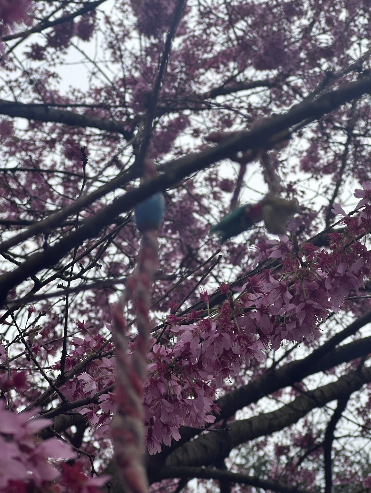
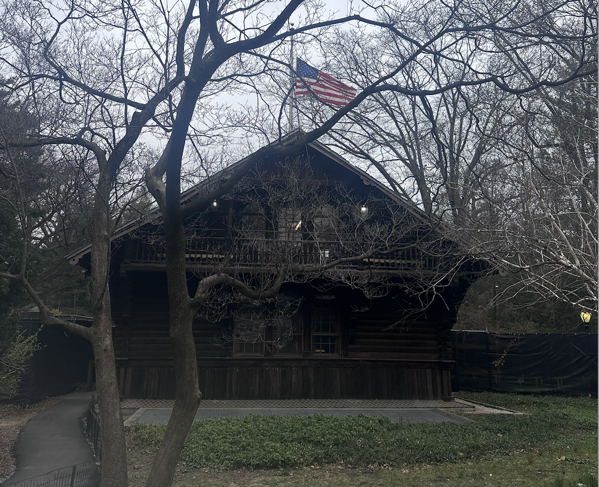

I am a computer science student who loves lattes, language, film, puzzles, animals, and travel.
My current movie obsession is Barry Lyndon (1975). This may be because of my time as a Starbucks barista, but I love making lattes for others. Currently working on producing consistent latte art beyond dots and hearts...
One of my proudest accomplishments is getting my neighbor's cat, whom I have never fed, to love me. She will come towards me when I call her name. One of my goals for the upcoming school year is to become a TA.
I am extremely lucky to have been able to freely explore whenever I travel somewhere for an internship. Forever grateful for the amount of fun I have had while learning so much. <3
Below are some camera roll crumbs from my previous internships.
Pics

Last Spring's Promise | 4.3.2025

Swedish Cottage Renovated | 3.30.2025
3.17.2025
An hour's wait and dozens more from TikTok hype later... | 3.1.2025